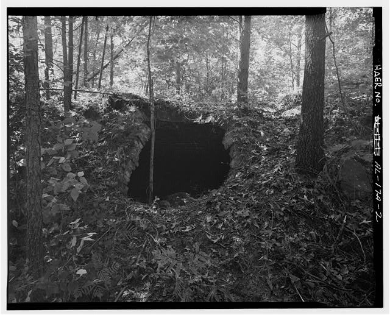

The creek comes back

The story turns around in this chapter, and the thing that turns it is the creek. Six cities formed a district in 2002 to clean up Five Mile Creek and open it back up to people, and Graysville and Brookside are two of them. In 2012 the Five Mile Creek Greenway became part of the area wide Red Rock Ridge and Valley Trail System, and in July 2018 the six cities and the Freshwater Land Trust bought 16.5 miles of corridor from CSX. That corridor was laid in the late 1800s as part of the Birmingham Mineral Railroad, to haul coal out of mines like the ones at Cardiff and Brookside, which means the road built to take the coal away is the path people walk on now, and an extension that opened in 2023 made it the longest multiuse trail in Jefferson County. None of that makes the water tame. Storms in May 2003 put Five Mile Creek through Cardiff and destroyed a number of buildings near it, and the same run of storms dropped ten inches of rain in ten hours and put water through downtown Brookside. The rest of the chapter is the ordinary business of small towns carrying on. A marker went up in Cardiff in May 2010 that a good deal of this page depends on, Graysville was named an Alabama Community of Excellence in 2011 and took an EF3 tornado through it in January 2012, the 2020 census counted 52 people in Cardiff where there had once been 562, and Brookside's police chief resigned in January 2022 in a matter the town settled in February 2026 for $1.5 million.
What happened, and when
—- 2002The watershedThe creek
Six cities go in together
Six cities formed a district in 2002 to clean up Five Mile Creek and open it back up to people. Graysville and Brookside are two of them.
- May 2003CardiffFire and storm
The 2003 flood
Storms in May 2003 put Five Mile Creek through Cardiff and destroyed a number of buildings near the water.
- 2003BrooksideFire and storm
Ten inches in ten hours
The same run of storms in 2003 dropped ten inches of rain in ten hours and put water through downtown Brookside.
- May 2010CardiffSettlement
The marker goes up
The Alabama Tourism Department and the Town of Cardiff put up a marker on the history in May 2010. A good deal of what this page says about Cardiff is on it.
- 2011GraysvilleGovernment
Named an Alabama Community of Excellence
Graysville entered the program in the class of 2007 and was designated in 2011.
- January 23, 2012GraysvilleFire and storm
The EF3
An EF3 tornado came through Graysville on January 23, 2012.
- 2012The watershedThe creek
The greenway joins Red Rock
The Five Mile Creek Greenway became part of the area wide Red Rock Ridge and Valley Trail System in 2012.
- July 2018The watershedThe creek
Sixteen and a half miles of railroad
In July 2018 the six cities and the Freshwater Land Trust bought 16.5 miles of corridor from CSX. It was laid in the late 1800s as part of the Birmingham Mineral Railroad, to haul coal out of mines like the ones at Cardiff and Brookside.
- 2020CardiffPeople
Fifty two people
The 2020 census counted 52 people in Cardiff, on 0.21 square miles. In 1900 it was 562.
- 2022BrooksideGovernment
The police department and the lawsuit
Brookside's police chief resigned on January 25, 2022. In February 2026 the town agreed to pay $1.5 million to settle a civil rights lawsuit.
- 2023The watershedThe creek
The longest trail in the county
An extension that opened in 2023 made the Five Mile Creek Greenway the longest multiuse trail in Jefferson County.
Every entry above carries the source it came from, and these are those sources in full. All of it is public material found online, so anything here can be followed back and checked. It also means that where this chapter says something is not recorded, what that really says is that it has not turned up in any of these, which is a smaller claim. If you know better, and somebody reading this probably does, it would be good to hear from you.
- Alabama Communities of Excellence, Graysville
- Alabama News Center, Five Mile Creek Greenway now the longest multiuse trail in Jefferson County
- Encyclopedia of Alabama, Brookside
- Freshwater Land Trust, District purchases rail corridor, opens new trail
- Freshwater Land Trust, Five Mile Creek
- Town of Cardiff marker, Erected by the Alabama Tourism Department and the Town of Cardiff, May 2010
- Wikipedia, Brookside, Alabama
- Wikipedia, Cardiff, Alabama
- Wikipedia, Graysville, Alabama
Fill in a gap
If you have a photograph, a date, a name, or a story about any of the three towns, send it. Corrections are just as welcome as additions, and this page gets better every time somebody who was there writes in.
fivemilec@gmail.com